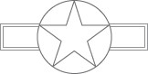
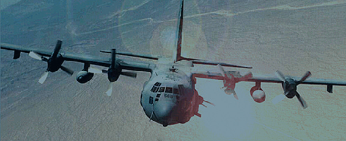
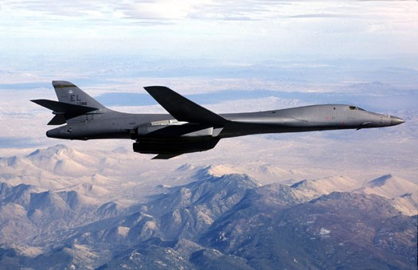
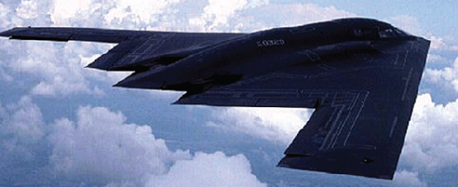

Heritage of the Roundel |
|
|
|
1906-1916 |
1918 – 1920 |
1917, 1921-1941 |
Used with and without white background circle. In use at the time of the Mexican Border Campaign. |
The official American insignia during World War I and began to be phased out in 1919. |
Introduced prior to the American entry into World War I and officially readopted after the war. |
|
|
|
1942-1943 |
1942-1943 |
1943 |
The red center of the 1921-1941 insignia was removed unofficially in December 1941 and officially in May 1942 to avoid confusion with Japanese insignia. |
Some aircraft in the European and Mediterranean theaters unofficially incorporated a yellow surround in the British style. |
Between 29 June and 14 August, the official national insignia incorporated white sidebars and an overall red surround. |
|

|
1943-1947 |
1947-Present |
The red surround of the official insignia was quickly changed to a blue surround. During its 4 years of use, this insignia appeared on more aircraft than all its predecessors combined. |
With the reorganization of the Defense Department and the creation of the United States Air Force, red bars were added to the official national insignia. |
|

|

|

|
Low Visibility
|
Beginning in the late seventies low visibility markings have been introduced officially and unofficially on the aircraft of the United States Air Force and other services. These grey insignia appear in their various forms on the majority of aircraft in the United States Air Force inventory.
|
20.4. Current Weapon Systems, Space Systems, and Missile and Munition Systems.
Airpower is “the ability to project military power or influence through the control and exploitation of air, space, and cyberspace to achieve strategic, operational, or tactical objectives.” The proper application of airpower requires a comprehensive doctrine of employment and an Airman’s perspective. As the nation’s most comprehensive provider of military airpower, the Air Force conducts continuous and concurrent air, space, and cyberspace operations. The air, space, and cyberspace capabilities of the other Services serve primarily to support their organic maneuver paradigms; the Air Force employs air, space, and cyberspace capabilities with a broader focus on theater-wide and national-level objectives. Through airpower, the Air Force provides the versatile, wide-ranging means towards achieving national objectives with the ability to deter and respond immediately to crises anywhere in the world.
Current Weapon Systems |

|
A-10 Thunderbolt II A-10C is a close air support platform used to support troops in contact with enemy forces. The A-10 performs secondary roles of Air Interdiction, Airborne Forward Air Control, and Combat Search and Rescue. This aircraft has excellent maneuverability at low air speeds and altitude, and is a highly accurate and survivable weapons-delivery platform. |
AC-130 Gunship The AC-130U/W/J gunships’ primary missions are close air support, air interdiction, and armed reconnaissance. Other missions include perimeter and point defense, escort, landing, drop and extraction zone support, forward air control, Combat Search and Rescue. The AC-130 gunship has a combat history dating back to Vietnam. |
 |
 |
B-1B Lancer The B-1B is a multi-mission bomber carrying the largest payload of both guided and unguided weapons in the Air Force inventory. The B-1B's blended wing/body configuration, variable-geometry wings and turbofan afterburning engines, combine to provide long range, maneuverability and high speed while enhancing survivability. |
B-2 Spirit The B-2 Spirit is a multi-role bomber capable of delivering both conventional and nuclear munitions. The penetrating flexibility and effectiveness inherent in manned bombers is what the B-2 provides. The low-observable, or "stealth," characteristics give it the unique ability to penetrate an enemy's most sophisticated defenses and threaten its most valued, and heavily defended, targets. |
 |
|